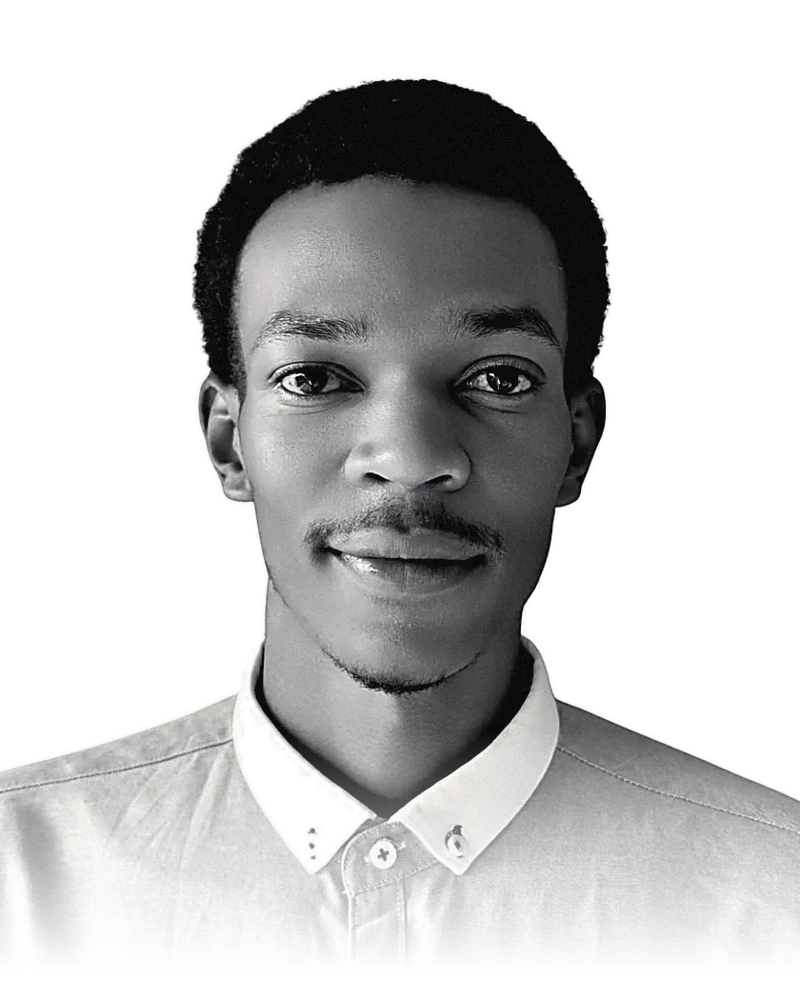
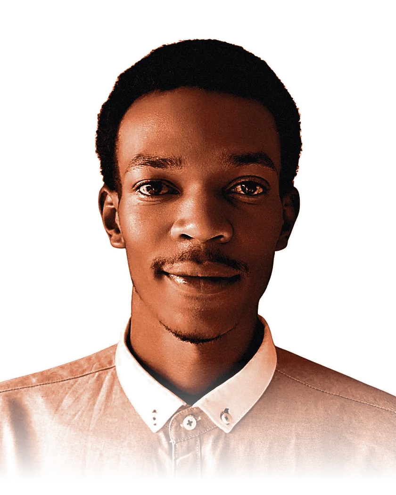
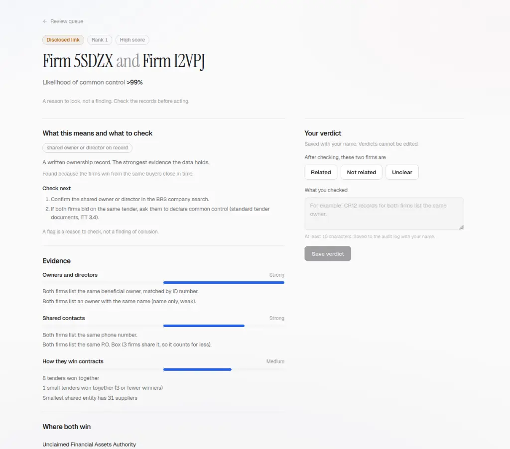

SamuelMwania
I build machine learning and data systems that run in production: model, API, container, deployment, load test, retraining path.
- BSc Software Engineering (ML) · African Leadership University · Completing December 2026
- Based in Kenya · Internships and project work now · Full-time from January 2027


AegisVeritas
Two bidders. One owner.
Finds bidders in Kenyan public procurement that look independent but are linked to each other or to a debarred party, before the contract is signed. Built end to end, evaluated with pre-registered tests on Kenyan and Estonian data, and every flag shows its evidence.

Selected work
Research
Hidden supplier links in Kenyan public procurement
Pre-registered evaluation on Kenyan and Estonian data: average precision 0.146 against 0.067 for the baseline, and AUC 0.85 against 0.57 on unseen firms. Expert evaluation under way, under ALU ethics approval SEPT26-BEL-070.
Method and results →How much do hyperparameters decide DQN performance?
A 30-experiment controlled study with a public log. In my sweep, a discount factor of 0.90 beat the conventional 0.99.
Details →- Record linkage and graph ML
- Risk analytics
- AI for public institutions and finance
- Low-resource African language NLP
- Evaluation methodology
Software engineer in Kenya, building machine learning and data systems where software meets public institutions, finance and development.
I take a problem from raw data to a running service: evaluated against a stated baseline, deployed, tested, and documented so another engineer can extend it. Failed results are reported next to the ones that passed.
BSc Software Engineering, Machine Learning
African Leadership University
Jan 2024 – Dec 2026 · graduation June 2027
- AegisVeritas capstone, supervised by Kevin Sebineza
- 17th of 1,651 on Zindi, five African languages
- Two ML services live in production
- Team work: Freeway DQN (3), MoMo Analyst (4, data pipeline)
Let's talk
Open to internships and project work now, and full-time roles from January 2027. Remote, or relocating where employer-sponsored opportunities are available. I reply within a day.
Contract or consulting work? Scope and rates
Polled from your browser when this page loads, with round-trip latency.
Posts to the deployed Random Forest and returns a live prediction.